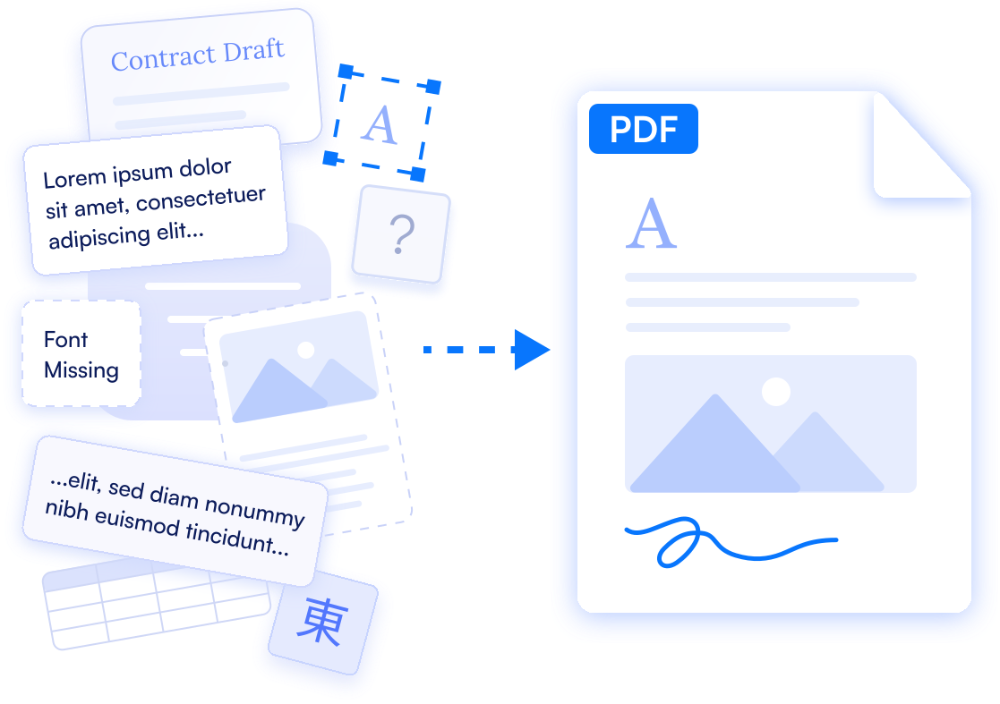

Open source
PDF solutions
PDF solutions
Documents
belong on the web.
A short field guide to the past,
present and future of PDF.
An editorial demo document for EmbedPDF
A short field guide to the past,
present and future of PDF.
PDF was born out of a simple but stubborn challenge: how do you share a document and keep it looking exactly right, everywhere?

In the late 1980s, moving a document between two computers was a gamble. Fonts went missing, layouts shifted, colours drifted. What printed on one machine rarely matched what appeared on another.
Adobe co-founder John Warnock set out to fix that. The Portable Document Format, introduced in 1993, captured a page as a precise description that was independent of application, operating system and device. It embedded its fonts, carried vector art, and mapped to print with exact fidelity.
It worked. PDF became the dependable way to send contracts, manuals, reports and forms: anything that had to look professional and stay that way.
The goal was simple: create a digital document that looks the same everywhere.
Key moments that shaped the way
we create, share and experience documents.
One modern document format.
Every team. Every system. Every time.